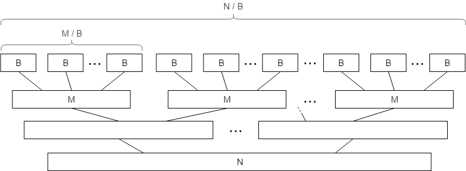

Now, let’s try to design some actually useful algorithms for the new external memory model. Our goal in this section is to slowly build up more complex things and eventually get to external sorting and its interesting applications.
The algorithm will be based on the standard merge sorting algorithm, so we need to derive its main primitive first.
#Merge
Problem. Given two sorted arrays $a$ and $b$ of lengths $N$ and $M$, produce a single sorted array $c$ of length $N + M$ containing all of their elements.
The standard two-pointer technique for merging sorted arrays looks like this:
void merge(int *a, int *b, int *c, int n, int m) {
int i = 0, j = 0;
for (int k = 0; k < n + m; k++) {
if (i < n && (j == m || a[i] < b[j]))
c[k] = a[i++];
else
c[k] = b[j++];
}
}
In terms of memory operations, we just linearly read all elements of $a$ and $b$ and linearly write all elements of $c$. Since these reads and writes can be buffered, it works in $SCAN(N+M)$ I/O operations.
So far the examples have been simple, and their analysis doesn’t differ too much from the RAM model, except that we divide the final answer by the block size $B$. But here is a case where this is not so.
$k$-way merging. Consider the modification of this algorithm where we need to merge not just two arrays, but $k$ arrays of total size $N$ — by likewise looking at $k$ values, choosing the minimum between them, writing it into $c$, and incrementing one of the iterators.
In the standard RAM model, the asymptotic complexity would be multiplied $k$, since we would need to perform $O(k)$ comparisons to fill each next element. But in the external memory model, since everything we do in-memory doesn’t cost us anything, its asymptotic complexity would not change as long as we can fit $(k+1)$ full blocks in memory, that is, if $k = O(\frac{M}{B})$.
Remember the $M \gg B$ assumption when we introduced the computational model? If we have $M \geq B^{1+ε}$ for $\epsilon > 0$, then we can fit any sub-polynomial number of blocks in memory, certainly including $O(\frac{M}{B})$. This condition is called tall cache assumption, and it is usually required in many other external memory algorithms.
#Merge Sorting
The “normal” complexity of the standard mergesort algorithm is $O(N \log_2 N)$: on each of its $O(\log_2 N)$ “layers,” the algorithms need to go through all $N$ elements in total and merge them in linear time.
In the external memory model, when we read a block of size $M$, we can sort its elements “for free,” since they are already in memory. This way we can split the arrays into $O(\frac{N}{M})$ blocks of consecutive elements and sort them separately as the base step, and only then merge them.

This effectively means that, in terms of I/O operations, the first $O(\log M)$ layers of mergesort are free, and there are only $O(\log_2 \frac{N}{M})$ non-zero-cost layers, each mergeable in $O(\frac{N}{B})$ IOPS in total. This brings total I/O complexity to
$$ O\left(\frac{N}{B} \log_2 \frac{N}{M}\right) $$This is quite fast. If we have 1GB of memory and 10GB of data, this essentially means that we need a little bit more than 3 times the effort than just reading the data to sort it. Interestingly enough, we can do better.
#$k$-way Mergesort
Half of a page ago we have learned that in the external memory model, we can merge $k$ arrays just as easily as two arrays — at the cost of reading them. Why don’t we apply this fact here?
Let’s sort each block of size $M$ in-memory just as we did before, but during each merge stage, we will split sorted blocks not just in pairs to be merged, but take as many blocks we can fit into our memory during a $k$-way merge. This way the height of the merge tree would be greatly reduced, while each layer would still be done in $O(\frac{N}{B})$ IOPS.
How many sorted arrays can we merge at once? Exactly $k = \frac{M}{B}$, since we need memory for one block for each array. Since the total number of layers will be reduced to $\log_{\frac{M}{B}} \frac{N}{M}$, the total complexity will be reduced to
$$ SORT(N) \stackrel{\text{def}}{=} O\left(\frac{N}{B} \log_{\frac{M}{B}} \frac{N}{M} \right) $$Note that, in our example, we have 10GB of data, 1GB of memory, and the block size is around 1MB for HDD. This makes $\frac{M}{B} = 1000$ and $\frac{N}{M} = 10$, and so the logarithm is less than one (namely, $\log_{1000} 10 = \frac{1}{3}$). Of course, we can’t sort an array faster than reading it, so this analysis applies to the cases when we have a very large dataset, small memory, and/or large block sizes, which rarely happens in real life these days.
#Practical Implementation
Under more realistic constraints, instead of using $\log_{\frac{M}{B}} \frac{N}{M}$ layers, we can use just two: one for sorting data in blocks of $M$ elements, and another one for merging all of them at once. This way, from the I/O operations perspective, we just loop around our dataset twice. And with a gigabyte of RAM and a block size of 1MB, this way can sort arrays up to a terabyte in size.
Here is how the first phase looks in C++. This program opens a multi-gigabyte binary file with unsorted integers, reads it in blocks of 256MB, sorts them in memory, and then writes them back in files named part-000.bin, part-001.bin, part-002.bin, and so on:
const int B = (1<<20) / 4; // 1 MB blocks of integers
const int M = (1<<28) / 4; // available memory
FILE *input = fopen("input.bin", "rb");
std::vector<FILE*> parts;
while (true) {
static int part[M]; // better delete it right after
int n = fread(part, 4, M, input);
if (n == 0)
break;
// sort a block in-memory
std::sort(part, part + n);
char fpart[sizeof "part-999.bin"];
sprintf(fpart, "part-%03d.bin", parts.size());
printf("Writing %d elements into %s...\n", n, fpart);
FILE *file = fopen(fpart, "wb");
fwrite(part, 4, n, file);
fclose(file);
file = fopen(fpart, "rb");
parts.push_back(file);
}
fclose(input);
What is left now is to merge them together. The bandwidth of modern HDDs can be quite high, and there may be a lot of parts to merge, so the I/O efficiency of this stage is not our only concern: we also need a faster way to merge $k$ arrays than by finding minima with $O(k)$ comparisons. We can do that in $O(\log k)$ time per element if we maintain a min-heap for these $k$ elements, in a manner almost identical to heapsort.
Here is how to implement it. First, we are going to need a heap (priority_queue in C++):
struct Pointer {
int key, part; // the element itself and the number of its part
bool operator<(const Pointer& other) const {
return key > other.key; // std::priority_queue is a max-heap by default
}
};
std::priority_queue<Pointer> q;
Then, we need to allocate and fill the buffers:
const int nparts = parts.size();
auto buffers = new int[nparts][B]; // buffers for each part
int *l = new int[nparts], // # of already processed buffer elements
*r = new int[nparts]; // buffer size (in case it isn't full)
// now we add fill the buffer for each part and add their elements to the heap
for (int part = 0; part < nparts; part++) {
l[part] = 1; // if the element is in the heap, we also consider it "processed"
r[part] = fread(buffers[part], 4, B, parts[part]);
q.push({buffers[part][0], part});
}
Now we just need to pop elements from the heap into the result file until it is empty, carefully writing and reading elements in batches:
FILE *output = fopen("output.bin", "w");
int outbuffer[B]; // the output buffer
int buffered = 0; // number of elements in it
while (!q.empty()) {
auto [key, part] = q.top();
q.pop();
// write the minimum to the output buffer
outbuffer[buffered++] = key;
// check if it needs to be committed to the file
if (buffered == B) {
fwrite(outbuffer, 4, B, output);
buffered = 0;
}
// fetch a new block of that part if needed
if (l[part] == r[part]) {
r[part] = fread(buffers[part], 4, B, parts[part]);
l[part] = 0;
}
// read a new element from that part unless we've already processed all of it
if (l[part] < r[part]) {
q.push({buffers[part][l[part]], part});
l[part]++;
}
}
// write what's left of the output buffer
fwrite(outbuffer, 4, buffered, output);
//clean up
delete[] buffers;
for (FILE *file : parts)
fclose(file);
fclose(output);
This implementation is not particularly effective or safe-looking (well, this is basically plain C), but is a good educational example of how to work with low-level memory APIs.
#Joining
Sorting is mainly used not by itself, but as an intermediate step for other operations. One important real-world use case of external sorting is joining (as in “SQL join”), used in databases and other data processing applications.
Problem. Given two lists of tuples $(x_i, a_{x_i})$ and $(y_i, b_{y_i})$, output a list $(k, a_{x_k}, b_{y_k})$ such that $x_k = y_k$
The optimal solution would be to sort the two lists and then use the standard two-pointer technique to merge them. The I/O complexity here would be the same as sorting, and just $O(\frac{N}{B})$ if the arrays are already sorted. This is why most data processing applications (databases, MapReduce systems) like to keep their tables at least partially sorted.
Other approaches. Note that this analysis is only applicable in the external memory setting — that is, if you don’t have the memory to read the entire dataset. In the real world, alternative methods may be faster.
The simplest of them is probably hash join, which goes something like this:
def join(a, b):
d = dict(a)
for x, y in b:
if x in d:
yield d[x]
In external memory, joining two lists with a hash table would be unfeasible, as it would involve doing $O(M)$ block reads, even though only one element is used in each of them.
Another method is to use alternative sorting algorithms such as radix sort. In particular, radix sort would work in $O(\frac{N}{B} \cdot w)$ block reads if enough memory is available to maintain buffers for all possible keys, and it could be faster in the case of small keys and large datasets.